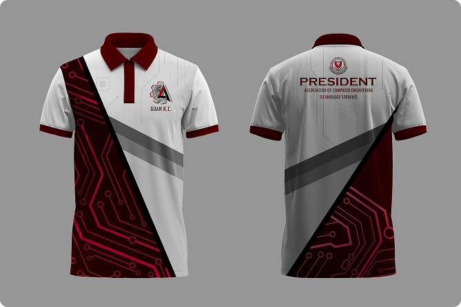

C E T E
J E R S E Y
Computer Engineering Technology department. Utilizing a striking gradient that transitions from a bold, energetic red to a deep, commanding navy, the design visually communicates both passion and technical professionalism. I focused on clean typography and strategic logo placement to ensure the department's branding remains highly visible and impactful, whether on the court or during campus events.
The process involved conceptualizing the visual elements and translating them into precise 3D digital mockups, demonstrating my proficiency in industry-standard graphic design software. By balancing aesthetic appeal with the functional requirements of athletic wear, I ensured the final digital output was both visually striking and optimized for physical production. Ultimately, this project highlights my ability to take a conceptual branding requirement and deliver a cohesive, high-quality visual asset that fosters team spirit and organizational pride.

A C E T S
O R G S H I R T
The design utilizes a modern, dynamic layout featuring a crisp white base heavily contrasted by sharp diagonal color blocking in slate grey and deep crimson. A defining feature of this project is the intricate circuit board motif seamlessly integrated into the dark red panels, serving as a deliberate visual representation of the organization's engineering and technology roots. I prioritized clean logo placement and authoritative typography—highlighted by the prominent "PRESIDENT" text on the reverse—to project a sense of leadership and professional unity.
By developing high-fidelity 3D digital mockups, I ensured that the complex geometric patterns aligned perfectly across the garment's seams while remaining optimized for physical manufacturing. Ultimately, this project illustrates my ability to translate abstract technical themes into stylish, wearable branding that fosters organizational pride and a cohesive team identity.

Y U N K Y S H I R T
This project showcases my approach to contemporary streetwear design, blending minimalist apparel aesthetics with complex, tech-inspired graphics. The front of the garment utilizes a highly restrained approach, featuring a subtle, stylized blue logo on the left chest to maintain a clean and versatile look. In striking contrast, the reverse side serves as a canvas for a bold, high-impact graphic that incorporates layered typography, digital barcode motifs, and abstract photographic elements.
By utilizing a monochromatic blue color palette against a stark black background, the design evokes a modern, slightly cyberpunk atmosphere that resonates with current urban fashion trends. The process required careful spatial composition and the creation of high-fidelity digital mockups to ensure the intricate back graphic would translate effectively for physical apparel production. Ultimately, this project highlights my ability to balance subtle branding with dynamic visual artistry, resulting in cohesive apparel that functions as wearable digital art.